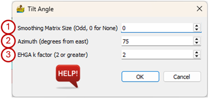

Tilt Angle and Related Edge Filters¶
This module calculates the Standard Tilt Angle, Hyperbolic Tilt Angle, 2nd Order Tilt Angle, Tilt Based Directional Derivative, Total Derivative (all from Cooper and Cowan, 2006), Tilt Angle of the Horizontal Gradient (Ferreria et al., 2013) and the Enhanced Horizontal Gradient Amplitude (EHGA) (Pham et al., 2022). All of these filters are applied to the data and results in a multiband dataset.
The options available on the interface are:
Smoothing Matrix Size (Off, 0 for None) – The data can be smoothed prior to applying the filters. Here the user can specify the window size of the smoothing matrix. The size must be an odd number. A value of 0 indicates the data must not be smoothed.
Azimuth (degrees from east) – The direction, in degrees from east, in which to apply the Tilt Based Directional Derivative. 0° is E-W, 45° is NW-SE, 90° is N-S and -45° is NE-SW. Features perpendicular to the azimuth are highlighted.
EHGA k factor (2 or greater) – This factor determines the sharpness of the edge detection filter.

The resulting multiband dataset can be exported by right-clicking on the function and selecting Export Raster.
References¶
Cooper, G.R.J., & Cowan, D.R. (2006). Enhancing potential field data using filters based on the local phase. Computers & Geosciences, 32(10), 1585–1591. https://doi.org/10.1016/j.cageo.2006.02.016
Ferreira, F., Souza, J., Bongiolo, A., Castro, L. (2013). Enhancement of the total horizontal gradient of magnetic anomalies using the tilt angle. GEOPHYSICS. 78. J33-J41. 10.1190/geo2011-0441.1.